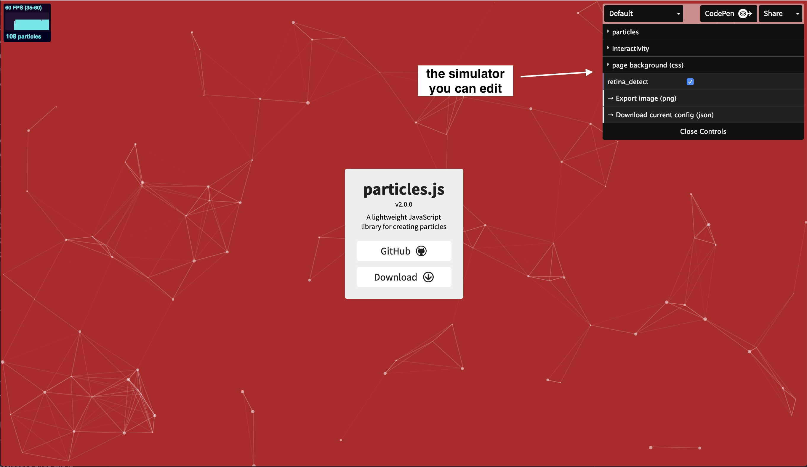
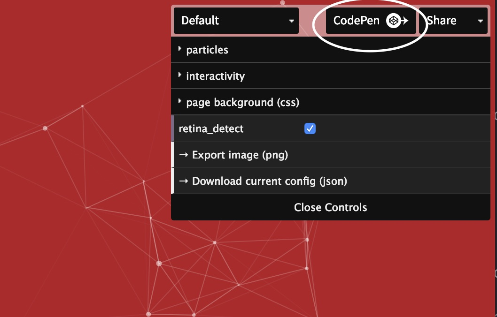
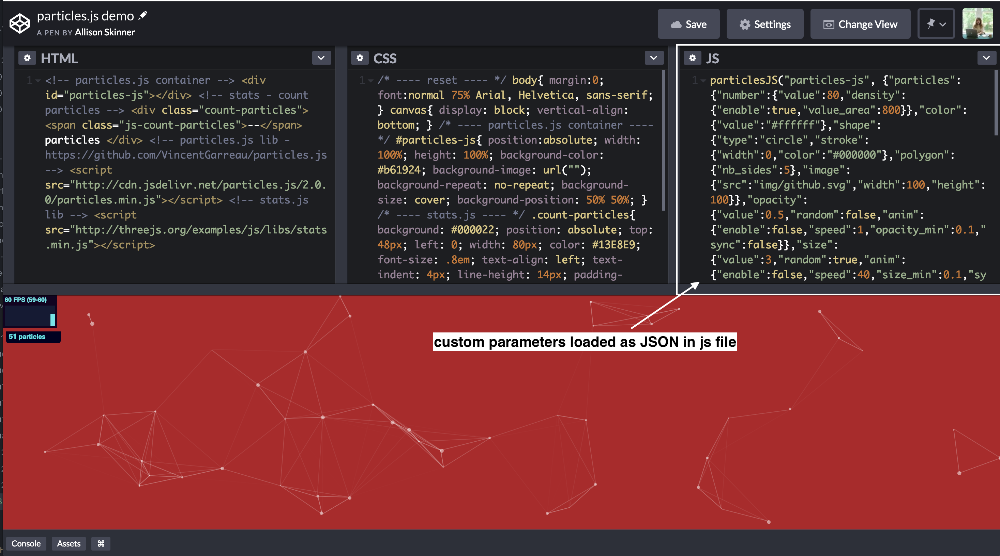
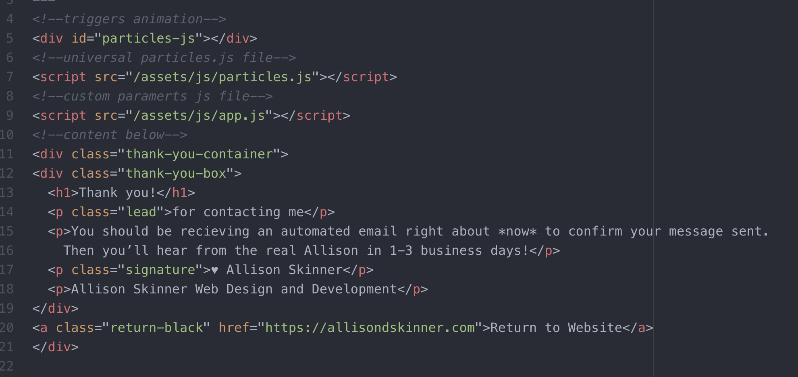

Why Redirection to a Thank You page?
I wanted anyone that fills out my contact form get redirected to a “thank you” page for a few reasons…
- They know the form submission successfully sent. When you fill out a form online and click submit, it’s nice to have confirmation that it has been received. Otherwise you are left wondering if it got sent at all!
- Provide a note from myself about next steps. On my thank you page I let my leads know that I’ll respond to them in 1-3 business days. This sets the expectation that I will be getting back to them, but it likely won’t happen within the next few minutes or over the weekend.
- It’s always nice to say thank you! My mom always made me write thank you notes growing up. As a teenager, it felt like a chore. Now I think it’s an opportunity! I wish I could send written thank you notes to everyone that contacted me, but I can at least dedicate a moment to thanking them on my website. That’s because I am very thankful! The majority of my client relationships start with a contact form submission.
How did I set up the Redirection?
Since I built my site on Jekyll, a static site generator, I had to use a third party to handle my contact form submissions. I chose Form Bucket because it was customizable at a developer level, dependable and had spam protection. In the form settings, there is an option for a ‘custom redirect’, I provided the thank you page URL in this field.
How did I do the animation?
The animated stars is achieved through particles.js, a javascript library for animating “particles” (or other objects like stars!). I used particles.js on the Athentic Brewing Company’s homepage as well. The effect is like bubbles coming up in a glass.
Particles.js is very easy to use.
-
First, I use the handy simulator on the particles.js website to decide the type of animation I want. You can decide shape, direction, speed, density, color, etc. Play around and decide what you’d like. 
-
Then click the “codepen” button in the top right corner. This will create a code pen with your custom parameters.  You can adjust your parameters further if you’d like.  For example, if you’d like there to be more than one color for the animated objects, you can create an array like so..
"color": { "value": ["#5D47BA","#FFDBFF","#FB5435","#E00A30","#04CEF9"] }, -
The codepen will have you set up for success. If you are going to add the particles.js animation to your site you should add the “custom” js (what’s in the righthand side) as seperate JS file below your universal particles.min.js file, that way it can pick up your custom parameters. This is how it looks on my site… 
-
Final Result!